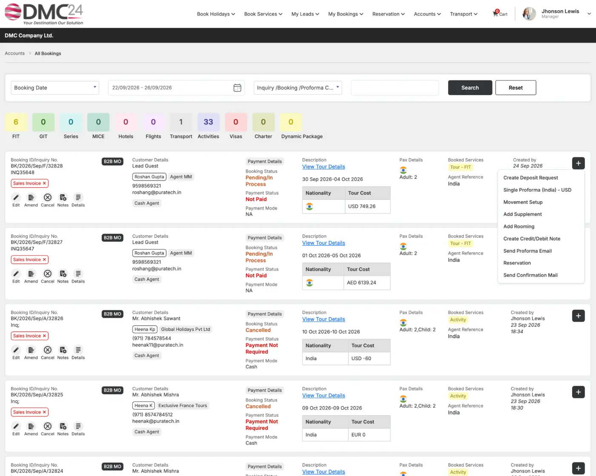

BKG
Booking Management
Manage FIT and ad hoc group travel files with service, passenger, invoice and operational information.
Convert quotations into travel files, manage FIT and group bookings, coordinate supplier confirmations and keep every reservation connected to operations and finance.

Connect confirmed services, supplier responses, passenger details and vouchers to the booking’s operational and financial records.
Manage FIT and ad hoc group travel files with service, passenger, invoice and operational information.
Create FIT or GIT bookings quickly when a full quotation workflow is not required.
Send supplier requests, record confirmations and monitor reservation status service by service.
Generate supplier vouchers, customer vouchers, itineraries and operational documents.
Track hotel confirmations, automated reconfirmation needs and group rooming lists.
Control changes, cancellations, reissues and refund workflows while protecting the travel-file history.
Convert a quote or make a quick booking.
Send requests and track supplier responses.
Issue vouchers and customer information.
Move accurate data into operations and finance.
Tell us how your DMC works today. We’ll show you how DMC24 can support tomorrow.